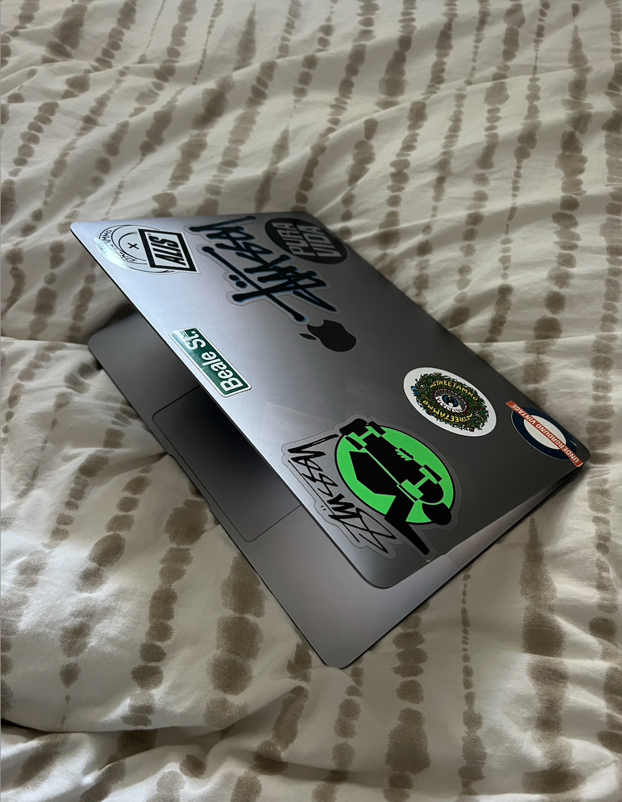
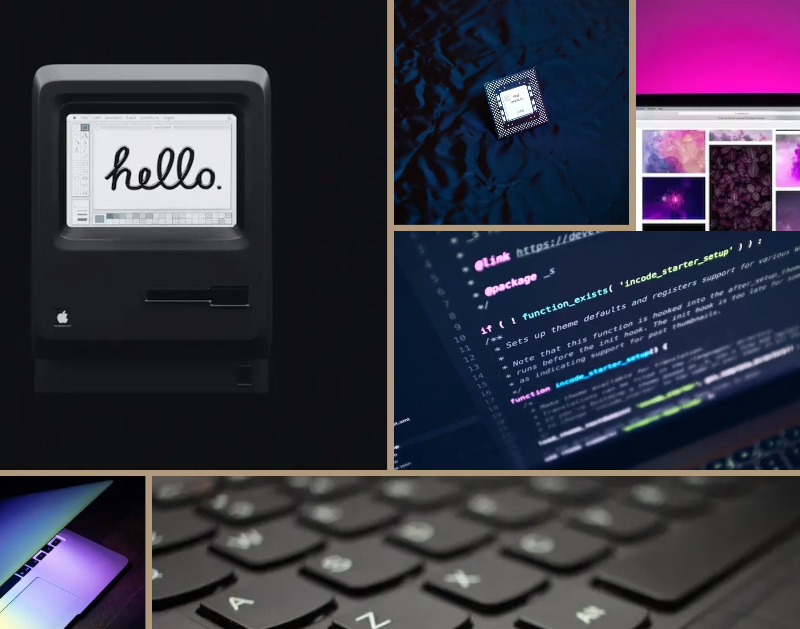
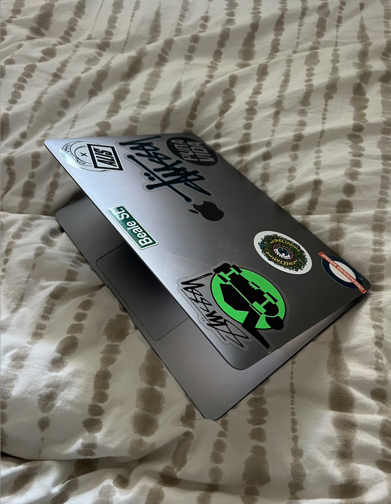
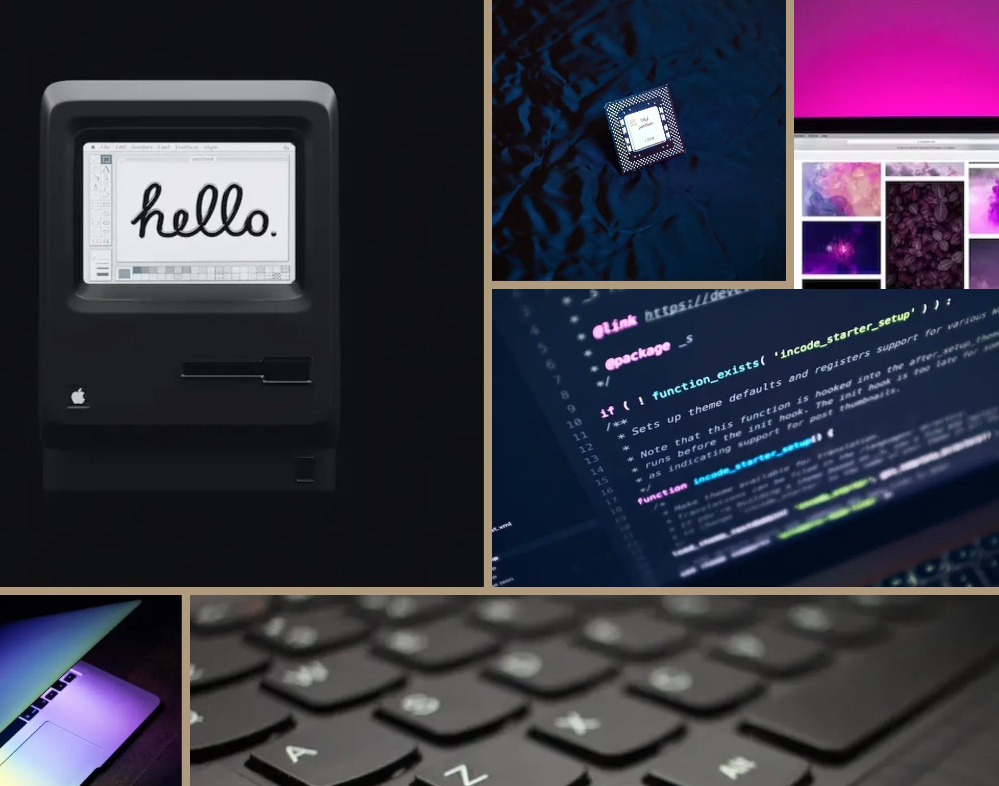

PROJEKT T02
COMPUTERSITE - GRUNDLÆGGENDE WEB
I dette projekt har jeg lavet en hjemmeside, der handler om computeren – både hvordan den blev til, hvordan den virker i dag, og hvad jeg personligt foretrækker, når det kommer til computere. Sitet er lavet i forbindelse med Tema 2, hvor vi har arbejdet med grundlæggende webdesign og kodning.
Design og struktur
Jeg har brugt designprincipper som wireframes, styletile og gestaltprincipper til at opbygge sitet. Siden er sat op med en logisk mappestruktur og klare navnekonventioner, så alt er nemt at finde og
arbejde med. Ift. strukturen fik vi udleveret et layoutdiagram samt wireframes, som vi skulle følge.
Responsivt webdesign
Hjemmesiden er lavet med “mobile first”-tilgangen, så den fungerer godt på både mobil og computer. Jeg har brugt CSS grid, flexbox og media queries til at sikre, at layoutet tilpasser sig
skærmstørrelsen.
Kodning og værktøjer
Alt er kodet i HTML og CSS, og jeg har brugt developer tools i browseren til at teste og rette fejl. Til design har jeg brugt Figma.
Webteknik og funktioner
Sitet er lagt op på et webhotel med domæne, som vi oprettede i timen. Jeg har arbejdet med semantisk HTML, genbrug af kode, opdeling af indhold og styling samt validering af koden.
Anvendt
Figma, HTML og CSS
 


